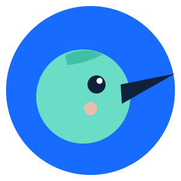
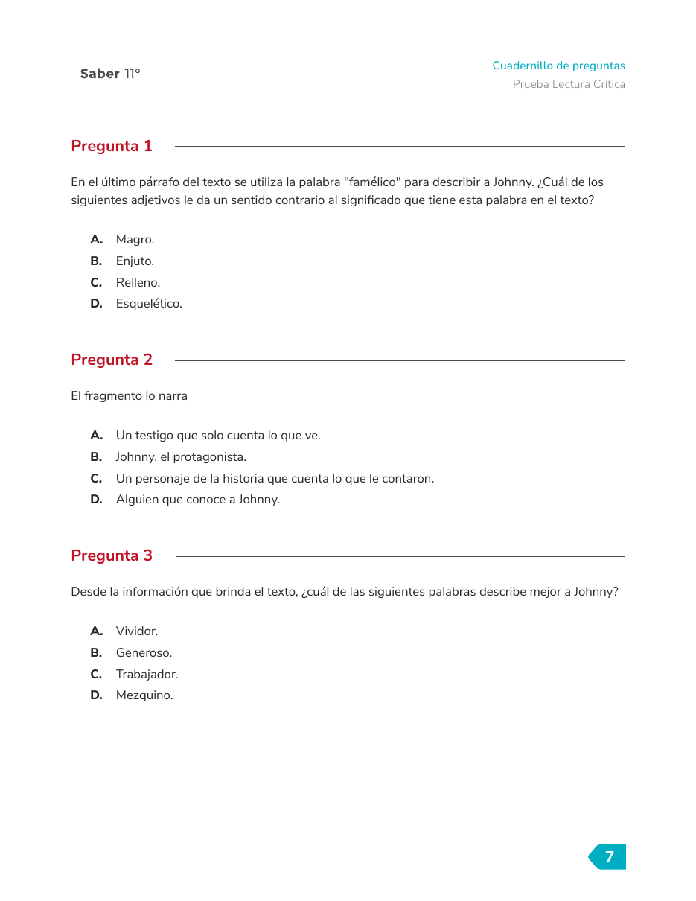

Que llegar al Saber 11 no dependa de poder pagar un preicfes.
Simulacros en el celular para los preuniversitarios populares, aun sin señal.
Jesús Romero · Felipe Soto · Josman Ramírez · Santiago Gil · Gestión de Proyectos Informáticos · Pontificia Universidad Javeriana · noviembre de 2026

Impulso U
El problema
En Colombia, menos de la mitad de los bachilleres entra a la educación superior.
Y la brecha empieza antes: en el Saber 11 de 2025, los colegios privados superaron a los públicos por 31 puntos, y el nivel socioeconómico más alto al más bajo, por 77.
47,9 de cada 100 entran al año siguiente de graduarse52 no entran
Fuentes: El Espectador, 2026 [12], con la cifra del Gobierno nacional; Portafolio, s. f. [29], con datos del Icfes sobre el Saber 11.
Impulso U
El problema
Un preicfes comercial cuesta hasta $2,8 millones por ciclo; el preuniversitario popular es gratis, pero alcanza a aplicar un solo simulacro.
Elaboración propia a partir de conversaciones con educadores populares, Universidad de La Salle (2025) y Universidad del Cauca (2026). Costo de la preparación para el Saber 11 por estudiante y ciclo, en pesos.
Impulso U
En Bogotá
Más de un tercio de los bachilleres se queda afuera. Los preuniversitarios populares los preparan gratis.
Son colectivos comunitarios que, los sábados y con voluntarios, preparan para el Saber 11 y el examen de la Universidad Nacional.
27.000
de los 73.747 bachilleres de Bogotá en 2025 no entraron a la educación superior
Fuente: Grupo Impulso U, 2026 [20], con datos de la Secretaría de Educación de Bogotá y el SNIES (2025).
Impulso U
Dentro del preuniversitario
Hoy, un simulacro es una pila de fotocopias y un sábado entero.
1
40 a 50 estudiantes por simulacro impreso, que la tallerista corrige a mano.
2
Por eso se hace 1 simulacro por ciclo, de febrero a agosto.
3
Quien enseña es voluntario: 2 a 5 horas por semana, y suele irse al año siguiente.
Fuente: conversaciones con dos educadores de preuniversitarios populares, Grupo Impulso U, 2026 [20].
Impulso U
Lo que cuesta en estudiantes
De cada 100 que empiezan en febrero, 20 siguen en el preuniversitario cuando llega el examen.
FebMarAbrMayJunJulAgo
Saber 11
Fuente: estimación de dos educadores populares, Grupo Impulso U, 2026 [20]; se mide en el piloto. La posición de quienes se quedan en el camino es ilustrativa.
Impulso U
La solución
Impulso U: 8 simulacros sin fotocopias ni señal, y la tallerista ve quién se está quedando.
Impulso U
Andrea tiene 50 estudiantes el sábado y ninguna fotocopia.
Así es su semana con Impulso U.
Lo que ve cada uno
Laura ve sus resultados; Andrea ve a Kevin con nombre. ¿Quién más puede verlo?
Impulso UHola, Laura
Terminaste el simulacro 5
7 de 10 correctas
Por área
Lectura crítica4 de 5
Matemáticas3 de 5
Repasa lo que fallaste
Porcentajes: respuesta C. El 20% de 50 es 10.
Guardado en tu celular; se envía solo cuando vuelva la señal
Laura · estudiante
Impulso U
La solución · datos de menores
Los nombres se quedan en el colectivo; hacia afuera solo salen totales de diez o más.
Quién
Nombre
Respuestas una a una
Totales del grupo
Tallerista y comité
el colectivo, responsable de los datos
✓
✓
✓
Estudiante
sus propios datos
✓
✓
✓
Impulso U
encargado: opera la plataforma
solo opera
solo opera
✓
Municipio que paga
recibe el reporte del ciclo
—
—
grupos de 10 o más
La IA
trabaja con las preguntas del banco
—
—
sin nombres
Ciclo de vida del dato
Elaboración propia a partir de la Ley 1581 de 2012. Quién ve qué y por cuánto tiempo.
Impulso U
Viabilidad técnica
Diseñada para un sábado sin señal; la IA trabaja antes.
Entre semanala IA propone por lote; el comité aprueba
⬇
Una descargael simulacro baja una vez al celular
✈
Sábado sin señalse responde y se guarda en el teléfono
⟳
Vuelve la señaltodo llega solo al tablero de Andrea
0llamadas a la IA el sábado, por diseño
4,4 KBpesa un simulacro de 10 preguntas en la maqueta
0respuestas perdidas al cortar la señal en la maqueta
Por probarcon celulares reales y 500 estudiantes a la vez, antes del piloto
Requisitos: Doc de viabilidad técnica del grupo [20]. Las cifras son el comportamiento de la maqueta, con el corte de señal simulado en el navegador; aún no hay pruebas con usuarios ni celulares reales.
Impulso U
Quién paga y quién usa
El municipio paga; el colectivo, la tallerista y el estudiante usan Impulso U gratis.
Actor y rol
Qué aporta
Qué recibe
PAGAN
Municipio o FDL
Pagador
$54 mil por estudiante al año
avance de su indicador; reporte por estudiante, salón y colegio, sin nombres
Fundación o empresa
Contrapartida
30% del convenio en dinero ($23 mil por estudiante)
cumple el requisito del convenio (Decreto 092 de 2017); reporte de impacto
Universidad
Ejecutora, solo en 2027
ejecuta los fondos de la convocatoria del piloto
retiene el 20% de lo que ejecuta
OPERA
Impulso U
Operador
app, banco con IA y reporte; trata los datos por encargo del colectivo
el pago del convenio
USAN, SIN COSTO
Colectivo
Dueño del banco y los datos
su comité aprueba cada pregunta
8 simulacros por ciclo sin fotocopias y un banco que no se va con el voluntario
Tallerista
Usuaria
prepara, aplica y acompaña
la mitad del tiempo de preparar y corregir; aviso de quién dejó de practicar
Estudiante
Beneficiario
responde en su celular, aun sin señal
práctica semanal, su resultado y qué repasar
El dinero va del municipio y la fundación a Impulso U mediante un convenio de asociación; el servicio llega gratis al colectivo, la tallerista y el estudiante.
Elaboración propia a partir del Decreto 092 de 2017 y del análisis de pagadores del grupo. Qué aporta y qué recibe cada actor, agrupados según paguen, operen o usen.
Impulso U
El mercado
Los municipios ya podrían gastar $22.500 millones al año en simulacros; Impulso U apunta a $46 millones en 2029.
Gasto anual = estudiantes × $54.200, la mediana de lo que pagan los municipios por estudiante al año en nueve contratos. Como referencia, en 2026 las entidades territoriales gastaron $23.360 M.
Elaboración propia a partir de Ministerio de Educación Nacional (2026), Secretaría de Educación del Distrito (2024) y nueve contratos de SECOP. Gasto anual en simulacros por nivel geográfico, en millones de pesos.
Impulso U
Competencia
Ninguna alternativa funciona sin señal y con práctica semanal.
Elaboración propia a partir de contratos en SECOP, Fundación Alcanza una Beca (2026) y la revisión de plataformas del grupo. Alternativas para practicar para el Saber 11, según conexión y frecuencia.
Impulso U
Modelo de negocio
Gratis para el colectivo. El municipio paga por simulacro aplicado y recibe el reporte.
Colectivo y estudiantes
$0
app, banco propio y 8 simulacros
Municipio o FDL
$54 mil
por estudiante al año: lo que hoy paga por 3 simulacros impresos
Por convenio de asociación: una fundación aporta el 30%. El precio es la mediana de 9 contratos públicos; lo prueba el piloto.
Precio: mediana del gasto municipal en simulacros por estudiante en 9 contratos de 6 departamentos, 2025–2026 [21]. Aporte del 30%: Decreto 092 de 2017, art. 5 [8]; convenio 054 de 2026 de Rionegro [28].
Impulso U
Validación temprana
Antes de construir, mostramos una maqueta a quienes la van a usar.
40 a 50estudiantes por simulacro impreso, una vez por ciclo
CC
Sep–oct 20262 educadores popularesvieron la maqueta; sus comentarios definieron el MVP
13 oct 2026Maqueta navegablepublicada en la web; muestra cómo se respondería sin señal

93 / 93
Oct 2026Preguntas reales del Icfescargadas en la maqueta con su clave: Lectura Crítica 49 y Matemáticas 44
SubaCiudad Bolívar
Nov 20262 colectivoscon contacto para el piloto de febrero
Fuentes: Grupo Impulso U, 2026 [20]; cuadernillos del Icfes, 2026 [23]; maqueta en fsotosa-ops.github.io/impulso-u-demo. Aún no hay pruebas con usuarios.
Impulso U
Go-to-market
Entramos gratis por el colectivo, convertimos con el municipio y crecemos sumando localidades.
1 · Entrar2027 · piloto
3 preuniversitarios populares, gratis
Por la red de educación popular de Jesús, con una convocatoria y una universidad ejecutora. Se convencen con el primer simulacro sin fotocopias.
Meta: que la usen cada semana
2 · Convertir2028 · primer pagador
Un FDL o municipio firma, con una fundación
Le llevamos el reporte del piloto antes de que arme su presupuesto; entra por convenio de asociación.
Meta: 1 convenio · 250 estudiantes
3 · Expandir2029 · más localidades
2 municipios o FDL, 12 colectivos
Con la referencia del primer convenio; sumar un colectivo cuesta menos de 8 h de equipo.
Meta: 600 estudiantes · $46,5 M · equilibrio
municipiocolectivo
Formato «land, convert, expand»: Airbyte, 2021 [1]. Escalar por afiliación: Dees, Anderson y Wei-Skillern, 2004 [9]. Cifras: modelo financiero del grupo [20].
Impulso U
Economía unitaria
Cada estudiante deja $44.000 de margen de contribución.
Pesos por estudiante al año. Con 598 estudiantes, la suma de los márgenes ($44 mil × 598) cubre el costo fijo de $26,1 M: ese es el punto de equilibrio.
Elaboración propia a partir del modelo financiero del grupo. Economía unitaria por estudiante al año, en pesos.
Impulso U
Camino al equilibrio
En 2029 los ingresos del municipio y la fundación igualan al costo.
Millones de pesos. Ingreso = pago del municipio o FDL + aporte de la fundación. 2027: 3 colectivos; 2028: 5 colectivos y 1 municipio; 2029: 12 colectivos y 2 municipios.
Elaboración propia a partir del modelo financiero del grupo. Costo e ingreso por año, 2027–2029, en millones de pesos.
Impulso U
Lo que pedimos
Se piden $65,9 millones en dos tramos, y el segundo depende de la compuerta de mayo.
Elaboración propia a partir del modelo financiero del grupo y de First Domino (2026). Uso de los fondos de 2027 y los hitos que producen.
Impulso U
Cómo sabremos si funcionó
De 20 a 40 de cada 100 siguen hasta el examen, y lo mide la propia app.
hoy ≈ 20
meta 40
½del tiempo de la tallerista para preparar y corregir
2 de 3colectivos la usan cada semana
≥ 1voluntario por colectivo sigue con el banco a cargo
1municipio o FDL firma para 2028
Metas del piloto de febrero a agosto de 2027 [20]. La línea base de 20 es una estimación de los educadores y se mide en el piloto.
Impulso U
Impacto
Si llegamos a la meta, 200 jóvenes más siguen hasta el examen hasta 2029.
+302027
+502028
+1202029
cada cuadro = 10 jóvenes que hoy se quedan en el camino
Cuánto cuesta cada uno$386 milpor cada joven adicional en 2029: el costo del año ÷ 120
Económico$5,8 Men fotocopias que los colectivos dejan de pagar en 2029
Ambiental≈24 mil páginassin imprimir en 2029: unos 113 kg de CO₂e; la IA emite menos de 4
Modelo del grupo [20]: jóvenes adicionales = 20% de los atendidos (150, 250 y 600) si la permanencia pasa de 20 a 40; costo por joven = costo total de 2029 ÷ 120. Páginas: el simulacro que hoy se imprime, 40 por estudiante; fotocopia a $242 (FUGA, 2026 [16]); papel: Tomberlin et al., 2020 [31]. Detalle en el anexo, Impacto.
Impulso U
Lo que sigue · roadmap técnico
Primero lo que compra el municipio; después lo que diferencia al producto.
Elaboración propia a partir de estudios previos de contratos de simulacros en SECOP (2025–2026). Roadmap técnico de Impulso U, 2027 en adelante.
Impulso U
Equipo
Quien coordinó un preuniversitario, con quienes ya construyeron la app que vieron.
JR
Jesús Romero
Producto y desarrollo
Coordinó un preuniversitario popular. Desarrollador fullstack.
FS
Felipe Soto
Arquitectura y gestión
Arquitectura de soluciones para organizaciones sociales.
JR
Josman Ramírez
Datos y gestión
Gestión de proyectos y arquitectura de datos.
SG
Santiago Gil
Inteligencia artificial
Aprendizaje automático e IA.
Impulso U
De 1 a 8 simulacros.
De 20 a 40 que siguen hasta el examen.
Pedimos $65,9 millones para el piloto de 2027, con tres colectivos, una universidad ejecutora y un primer municipio aliado.
Prototipo: fsotosa-ops.github.io/impulso-u-demo
Impulso U
Anexo
Láminas de respaldo para las preguntas.
Impulso U
Anexo · Plan
El piloto valida en 2027 que se pueden aplicar ocho simulacros sin fotocopias y duplicar la permanencia.
Objetivo general
Validar entre febrero y agosto de 2027, con 3 preuniversitarios populares de Bogotá y unos 150 estudiantes, que Impulso U permite aplicar 8 simulacros por ciclo sin fotocopias y duplicar los estudiantes que siguen activos hasta el Saber 11.
Objetivo específico y cómo se mide
Fecha
1
Construir el MVP y probarlo con 500 estudiantes conectados a la vez
540 horas; prueba de carga sin errores
ene 2027
2
Medir la línea base en la primera semana del piloto
permanencia y horas de la tallerista por simulacro
feb 2027
3
Pasar la compuerta de uso: simulacros semanales sin fotocopias
metas que el grupo acuerda con los colectivos
may 2027
4
Duplicar la permanencia y reducir a la mitad el tiempo de la tallerista
de 20 a 40 de cada 100; −50% de horas
ago 2027
5
Proponer el primer convenio a un municipio o FDL, con una fundación
reporte por estudiante, salón y colegio
sep 2027
Elaboración propia. Objetivo general y objetivos específicos, con su medida y su fecha.
Impulso U
Anexo · Plan
Tres objetivos empujan una sola métrica: duplicar los estudiantes que siguen activos hasta el examen.
North Star del piloto · metas a agosto de 2027
Estudiantes que siguen activos las 4 semanas previas al Saber 11
La juzgan los tres objetivos: cada uno empuja una causa del abandono.
hoy
20
de 100
→
meta
40
de 100
Objetivo
Resultado clave
Base
Meta
Fuente del dato
O1
Que preparar y corregir un simulacro deje de costarle el fin de semana a la tallerista
KR 1.1
Tiempo de la tallerista para preparar y corregir un simulacro
100% (semana 1)
50%
registro de la tallerista
KR 1.2
Colectivos que aplican al menos 6 de sus 8 simulacros en la app
0 de 3
2 de 3
registro de la app
O2
Que cada estudiante practique como en el examen, todas las semanas
KR 2.1
Simulacros aplicados por estudiante en el ciclo
1
8
registro de la app
O3
Que el colectivo pueda seguir cuando termine el piloto
KR 3.1
Voluntarios por colectivo con el banco de preguntas a cargo en el ciclo 2
0
≥ 1
comité del colectivo
KR 3.2
Municipios o FDL con convenio para 2028
0
≥ 1
convenio firmado
Contrapesos
No deben empeorar mientras se persiguen las metas: el comité revisa de verdad cada pregunta del banco · ninguna sesión presencial se reemplaza · nube e IA bajo USD 0,50 por estudiante.
Elaboración propia. North Star, objetivos y resultados clave (OKR) del piloto, con línea base, meta a agosto de 2027 y fuente del dato.
Impulso U
Anexo · Plan
El proyecto avanza por fases con compuertas que liberan cada tramo de los recursos.
Elaboración propia a partir de Yas et al. (2023) y van der Merwe et al. (2020). Gestión por fases y etapas de Design Science Research.
Impulso U
Anexo · Plan
Las primeras doce semanas miden antes de decidir.
Semanas de febrero a mayo de 2027. En mayo, la compuerta decide si se libera el segundo tramo.
Elaboración propia. Calendario de las primeras doce semanas del piloto y compuerta de mayo.
Impulso U
Anexo · Plan
1¿Qué nos comprometemos a lograr?
2¿Cómo sabremos si va bien?
3¿Cómo lo hacemos?
4¿Qué pasa en 12 semanas?
5¿Qué entregamos y cuándo?
Seis entregables en diez meses, cada uno con su criterio de aceptación.
Dic 2026Acuerdos firmadosSe acepta si: 3 colectivos y la universidad ejecutora
Ene 2027MVPSe acepta si: 6 funciones del alcance; 500 estudiantes a la vez sin errores
Feb 2027Línea baseSe acepta si: permanencia y horas de la tallerista, medidas en la app
May 2027Informe de compuertaSe acepta si: cumple las metas de la compuerta; libera el tramo 2
Ago 2027Informe del pilotoSe acepta si: permanencia de 20 a 40; seguir, ajustar o parar
Sep 2027Reporte del piloto y propuestaSe acepta si: sin nombres, grupos de 10 o más; convenio con un municipio o FDL
Elaboración propia [20]. Las fechas son las de lo que pedimos y las 12 semanas del piloto.
Impulso U
Anexo · Finanzas
El costo es casi todo personas; la nube y la IA no llegan a $0,2 millones al año.
Millones de pesos colombianos
2027
2028
2029
Estudiantes atendidos
150
250
600
Equipo técnico: operación y mejoras
10,3
18,2
21,8
Coordinación de colectivos y pagadores
4,2
6,6
15,5
Contabilidad y protección de datos
3,5
9,0
9,0
Nube e IA
0,1
0,1
0,1
Desarrollo del MVP
34,6
0,0
0,0
Universidad ejecutora (20% de lo que falta)
13,2
3,6
0,0
Costo total
65,9
37,5
46,4
Pago del municipio o FDL
0,0
13,6
32,5
Aporte de la fundación (30% del convenio)
0,0
5,8
13,9
Ingreso total
0,0
19,4
46,5
Resultado
-65,9
-18,1
0,1
Financiamiento que hace falta
65,9
18,1
0,0
Elaboración propia a partir de Coderhouse (2026), Computrabajo (2026), Alegra (2025), Valora Analitik (2026), Universidad Tecnológica de Pereira (2007) y nueve contratos de SECOP. Estado de resultados proyectado, 2027–2029, en millones de pesos.
Impulso U
Anexo · Finanzas
Con la fundación, 598 estudiantes cubren el costo, y el plan de 2029 llega justo a ese punto; sin ella harían falta 1.277.
Elaboración propia a partir del modelo financiero del grupo; precio: mediana de nueve contratos. Ingreso y costo anual según los estudiantes atendidos, en millones de pesos.
Impulso U
Anexo · Finanzas
Hasta el equilibrio, el proyecto necesita unos $84 millones en subvenciones.
Elaboración propia a partir del modelo financiero del grupo. Resultado anual y necesidad acumulada de financiamiento, 2027–2029, en millones de pesos.
Impulso U
Anexo · Finanzas
Siete de los diez supuestos clave están verificados en fuentes externas.
Supuesto
Valor
Estado
Fuente
Precio por estudiante al año
$54 mil
verificado
mediana de 9 contratos de SECOP (2025–2026)
Aporte de la fundación
30% del convenio
verificado
Decreto 092 de 2017; convenio 054 de Rionegro
Estudiantes por colectivo
50
del proyecto
educadores: 40 a 50 por simulacro impreso
Tarifa del equipo técnico
$64.125 por hora
verificado
Coderhouse (2026) + 52% de carga prestacional
Coordinación por colectivo
6 h al mes, 8 meses
supuesto
supuesto del grupo
Coordinador de proyectos
$3.050.804 al mes
verificado
Computrabajo (2026)
Contabilidad desde 2028
$600.000 al mes
verificado
Alegra (2025)
Retención de la universidad
20% de lo que ejecuta
verificado
UTP, Acuerdo 21 de 2007
Colectivos y pagadores
3 / 5 / 12 · 0 / 1 / 2
supuesto
plan del grupo para 2027–2029
Forma de contratación
convenio de asociación
decisión
decisión del grupo; alternativa: mínima cuantía
Elaboración propia; las fuentes se listan en las referencias. Supuestos clave del modelo financiero, con su estado y su fuente.
Impulso U
Anexo · Finanzas
El precio y los estudiantes por colectivo mueven más el resultado; quedarse sin fundación pesa más que todo.
Resultado de 2029 en millones de pesos (600 estudiantes, 2 municipios, convenio con fundación). Rojo: el supuesto en su valor desfavorable; gris: favorable.
Elaboración propia a partir del modelo financiero del grupo. Resultado de 2029 si cada supuesto cambia un 20%, en millones de pesos.
Impulso U
Anexo · Impacto
Si se cumple la meta, 200 jóvenes más siguen hasta el examen entre 2027 y 2029.
Dimensión
Impulso U
Respaldo
Qué
Llegar al Saber 11 habiendo practicado: de 1 a 8 simulacros en el ciclo, y seguir activo hasta el examen.
North Star: de 20 a 40 de cada 100 activos las 4 semanas previas.
Quién
Estudiantes de grado 11 de colegios oficiales en preuniversitarios populares de Bogotá: 150 en 2027 y 600 en 2029, y sus talleristas.
Sin el colectivo no tienen otra preparación: el preicfes comercial cuesta $2,1 a 2,8 M.
Cuánto
200 jóvenes más siguen hasta el examen entre 2027 y 2029: 30, 50 y 120.
En 2029, $386 mil por cada joven adicional.
Contribución
Solo cuentan los que pasan de 20 a 40; los 20 que hoy siguen no se atribuyen a Impulso U.
Los simulacros con retroalimentación subieron 3,7 puntos el acceso en Medellín (SaberEs).
Riesgo
Que la permanencia suba por el colectivo y no por la app, o que la línea base esté mal.
Se mide desde la app en el piloto; la compuerta de mayo decide si se sigue.
Elaboración propia a partir de Impact Management Project (2018) y Posso et al. (2023). Las cinco dimensiones del impacto de Impulso U.
Impulso U
Anexo · Impacto
Dejar de imprimir evita unas 30 veces más emisiones de las que produce la IA en lote.
Kilos de CO₂e en 2029; tono fuerte: caso bajo, tono claro: caso alto. Generar en lote, con el modelo más pequeño que pase la revisión y en la misma región que la base de datos, mantiene la IA en unos pocos kilos.
Elaboración propia a partir de Tomberlin et al. (2020), Elsworth et al. (2025), You (2025) y Google Cloud (2025). Emisiones de 2029 en kilos de CO₂e: papel evitado frente a la IA.
Impulso U
Anexo · Impacto
Cada efecto negativo posible tiene un freno en el diseño.
A quién
Efecto negativo posible
Freno en el diseño
Estudiante
✕ Ampliar la brecha entre colegios
✓ gratis, funciona sin señal y acepta hojas en papel
Estudiante
✕ Exponer datos de menores
✓ permiso de la familia; al municipio solo grupos de 10 o más, sin nombres
Estudiante
✕ Estudiar para el puntaje y no para llegar
✓ la North Star es seguir activo, no el puntaje
Tallerista
✕ Que la IA la desplace
✓ la IA propone y el comité decide; ninguna clase presencial se reemplaza
Tallerista
✕ Sobrecargarla
✓ una tarea por pantalla; meta: la mitad del tiempo de preparar y corregir
Colectivo
✕ Estandarizar su forma de enseñar
✓ el banco es suyo, con textos propios además de los del Icfes
Colectivo
✕ Depender de la tecnología
✓ sin señal se sigue respondiendo; el papel sigue contando
Elaboración propia a partir del canvas social del borrador. Efectos negativos posibles sobre el estudiante, la tallerista y el colectivo.
Impulso U
Anexo · Plan
El MVP construye seis funciones en 540 horas; lo demás se prueba a mano o queda para después.
Elaboración propia a partir del documento de viabilidad técnica del grupo. Alcance del MVP y horas de desarrollo por componente.
Impulso U
Anexo · Técnico
La arquitectura separa el sábado sin señal del trabajo de la IA entre semana.
CLIENTES
todos los días
App de la tallerista
PWA en celular o laptop
Cumple: respuesta, escalabilidad
SÁBADO
App del estudiante
PWA + service worker + cola local
Cumple: sin conexión, datos móviles
SÁBADO
Hoja en papel
foto desde la app de la tallerista
Cumple: hojas en papel
ENTREGA
antes del sábado
SÁBADO
Firebase Hosting
app instalada una vez (1,5 MB) y simulacro como paquete estático
Cumple: concurrencia, disponibilidad, costo
DATOS
al reconectar
SÁBADO
Firestore, us-central1
banco, grupos, cuentas y respuestas
Cumple: concurrencia, datos de menores, respaldo
Reporte al pagador
totales calculados en el servidor
Cumple: datos de menores
IA EN LOTE
martes a viernes
Genera
Gemini 3.1 Pro, en lote
Cumple: IA, costo
Verifica
Gemini 3.8 Flash
Cumple: calidad del banco
Comité
personas
Cumple: calidad del banco
Lee hojas
Gemini 3.1 Flash-Lite
Cumple: hojas en papel
Borde azul: componentes que trabajan el sábado. Ninguno llama a la IA ese día, porque la capacidad de Gemini se comparte entre sus clientes y no está garantizada. Copia diaria de Firestore; restauración en menos de 4 h.
Elaboración propia a partir del documento de viabilidad técnica y de la documentación de Firebase y Gemini. Blueprint técnico: capas, tecnologías y requisitos que cumple cada componente.
Impulso U
Anexo · Técnico
Cuatro de los doce requisitos ya están demostrados o estimados; ocho se prueban antes del piloto.
Requisito
Umbral
Cómo se prueba
Estado
Concurrencia
500 estudiantes a la vez sin errores
prueba de carga
Por probar antes del piloto
Respuesta
descarga en menos de 30 s con 3G; cambio de pregunta en menos de 0,2 s
celular de gama baja
Por probar antes del piloto
Sin conexión
0 respuestas perdidas al reconectar
modo avión a mitad del simulacro
Demostrado en la maqueta: 0 pérdidas al cortar la señal en el navegador
Datos móviles
menos de 1 MB por simulacro
peso del paquete
Demostrado en la maqueta: 4,4 KB por 10 preguntas
Disponibilidad
99,5% al mes; PDF impreso como plan B
monitoreo y alerta de facturación
Por probar antes del piloto
Respaldo
copia diaria; se recupera en menos de 4 h
restauración de prueba
Por probar antes del piloto
Datos de menores
nombre solo dentro del colectivo; permiso de la familia
Ley 1581 y reglas de acceso
Por probar antes del piloto
Hojas en papel
99% de respuestas bien leídas
50 hojas reales de un colectivo
Por probar antes del piloto
Calidad del banco
menos de 2% de claves erradas
revisión del comité
Por probar antes del piloto
Costo
hasta USD 0,50 por estudiante y ciclo
tope de gasto con alerta
Estimado: USD 0,03 a 0,21 por estudiante
Escalabilidad
hasta 1.000 estudiantes sin rediseño
alta de un colectivo de prueba
Por probar antes del piloto
IA
nivel pagado; el simulacro no depende de ella
prueba con la IA desconectada
Demostrado por diseño: 0 llamadas el sábado
Elaboración propia a partir del documento de viabilidad técnica y de la maqueta navegable. Matriz de validación técnica: umbral, prueba y estado de cada requisito.
Impulso U
Anexo · Técnico
La nube y la IA cuestan menos de USD 0,25 por estudiante y bajan con la escala.
Precios de Firebase y de la API de Gemini de 2026; el banco usa la combinación de modelos más cara evaluada (Gemini 3.1 Pro para generar y 3.8 Flash para verificar).
Elaboración propia a partir de los precios de Firebase y de la API de Gemini (2026), modelo de costos del grupo. Costo variable por ciclo según el número de estudiantes, en dólares.
Impulso U
Anexo · Referencias
Airbyte. (2021). Series B pitch deck [Presentación]. LeadWave. https://getleadwave.io/pitch-decks/airbyte-pitch-deck
Alegra. (2025, 23 de diciembre). ¿Cómo calcular los honorarios de un contador en Colombia? https://blog.alegra.com/colombia/calcular-los-honorarios-de-un-contador/
Coderhouse. (2026). Sueldo desarrollador full stack en Colombia 2026. https://www.coderhouse.com/sueldos/sueldo-desarrollador-full-stack-colombia-2025
Colegio Americano de Barranquilla. (2026). Circular C-02-26.1: Información curso Pre-ICFES. https://www.colegioamericano.edu.co/wp-content/uploads/2026/02/CIRCULAR-C-02-26-1-PREICFES.pdf
Colombia Compra Eficiente. (2026). SECOP II: Contratos electrónicos y archivos de descarga; SECOP I: Procesos de compra pública [Conjuntos de datos; consulta del 21 de noviembre de 2026]. Datos Abiertos Colombia. https://www.datos.gov.co/resource/jbjy-vk9h
Computrabajo. (2026). Salario de coordinador de proyectos en Colombia [Consultado el 18 de noviembre de 2026]. https://co.computrabajo.com/salarios/coordinador-de-proyectos
Decreto 092 de 2017. Por el cual se reglamenta la contratación con entidades privadas sin ánimo de lucro a la que hace referencia el inciso segundo del artículo 355 de la Constitución Política. 23 de enero de 2017.
Dees, J. G., Anderson, B. B. y Wei-Skillern, J. (2004). Scaling social impact: Strategies for spreading social innovations. Stanford Social Innovation Review, 1(4), 24–32.
DeLone, W. H. y McLean, E. R. (2003). The DeLone and McLean model of information systems success: A ten-year update. Journal of Management Information Systems, 19(4), 9–30. https://doi.org/10.1080/07421222.2003.11045748
Departamento Administrativo Nacional de Estadística. (2026). Boletín técnico: Educación formal (EDUC) 2024. https://www.dane.gov.co/files/operaciones/EDUC/bol-EDUC-2024.pdf
El Espectador. (2026, 19 de julio). Los legados del presidente Gustavo Petro para la educación pública [Especial; cifra del Programa de Tránsito Inmediato a la Educación Superior del Gobierno nacional]. https://www.elespectador.com/especiales/los-legados-del-presidente-gustavo-petro-para-la-educacion-publica/
Elsworth, C., Huang, K., Patterson, D., et al. (2025). Measuring the environmental impact of delivering AI at Google scale (arXiv:2508.15734). https://arxiv.org/abs/2508.15734
First Domino. (2026). Profesionales con Impacto. https://firstdomino.ventures/projects/profesionales-con-impacto-es
González, R. A. y Pomares, A. (2012). La investigación científica basada en el diseño como eje de proyectos de investigación en ingeniería. Reunión Nacional ACOFI, Medellín.
Google Cloud. (2025). Carbon free energy for Google Cloud regions [region-carbon-info, 2025]. https://github.com/GoogleCloudPlatform/region-carbon-info
Google Cloud. (2026). Programa de prueba gratuita. https://cloud.google.com/free
Grupo Impulso U. (2026). Borrador del informe, Doc de viabilidad técnica, modelo financiero 2027–2029 y conversaciones con dos educadores de preuniversitarios populares (30 de septiembre y 2 de octubre) [Elaboración propia].
Grupo Impulso U. (2026). Desglose de simulacros en nueve contratos de preparación Saber 11 [El Santuario, Copacabana, Neira, Chocontá (2), San Mateo, Guateque y Rionegro (2); estudios previos y convenios de SECOP, 2025–2026; elaboración propia].
Hindle, G. A. y Vidgen, R. (2018). Developing a business analytics methodology: A case study in the foodbank sector. European Journal of Operational Research, 268(3), 836–851. https://doi.org/10.1016/j.ejor.2017.06.031
Icfes. (2026). Cuadernillo de preguntas Saber 11: Lectura Crítica y Matemáticas. https://www.icfes.gov.co/wp-content/uploads/2026/03/16-feb-cuadernillo-de-preguntas-lectura-critica-saber-11-2026.pdf
Impact Management Project. (2018). Impact management norms: The five dimensions of impact. https://impactfrontiers.org/norms/five-dimensions-of-impact/
Ley 1581 de 2012. Por la cual se dictan disposiciones generales para la protección de datos personales. 17 de octubre de 2012. D. O. No. 48.587.
Ministerio de Educación Nacional. (2026). MEN_NÚMERO_BACHILLERES_POR_ETC [Conjunto de datos; matrícula de grado 11 por sector, 2025]. Datos Abiertos Colombia. https://www.datos.gov.co/resource/5c2k-ahfc
Municipio de Rionegro (Santander). (2026). Convenio de asociación 054 de 2026 con la Fundación Sayal 35. https://rionegrosantander.micolombiadigital.gov.co/sites/rionegrosantander/content/files/001578/78892_contrato-0542026.pdf
Portafolio. (s. f.). Pruebas Saber 11: 15.000 estudiantes de estratos bajos dejaron de presentar el examen en un año. https://www.portafolio.co/tendencias/pruebas-saber-11-15-000-estudiantes-de-estratos-bajos-dejaron-de-presentar-el-examen-en-un-ano-494360
Posso, C., Saravia, E. y Uribe, P. (2023). Acing the test: Educational effects of the SaberEs test preparation program in Colombia (Borradores de Economía 1237). Banco de la República. https://doi.org/10.32468/be.1237
Tomberlin, K. E., Venditti, R. y Yao, Y. (2020). Life cycle carbon footprint analysis of pulp and paper grades in the United States using production-line-based data and integration. BioResources, 15(2), 3899–3914.
Universidad de La Salle, Dirección de Extensión. (2025). Curso preparatorio pruebas Saber 11°. https://cmspreprod.lasalle.edu.co/sites/default/files/2025-08/ULS_Brochure_CUR_Saber_11_0.pdf
Universidad del Cauca. (2026). Curso virtual de preparación para la prueba Saber 11 calendario A. https://www.unicauca.edu.co/wp-content/uploads/2026/03/CURSO-VIRTUAL-DE-PREPARACION-PARA-LA-PRUEBA-SABER-11-CALENDARIO-A.pdf
Universidad Tecnológica de Pereira, Consejo Superior. (2007). Acuerdo 21 de 2007, por medio del cual se reglamentan los proyectos especiales (art. 11). https://media2.utp.edu.co/archivos/AcuerdoCSU%2021.pdf
Universidad Tecnológica de Pereira. (2024). Curso preicfes [Plegable]. https://media2.utp.edu.co/programas/6/PlegableCursoPreicfes2024.pdf
Valora Analitik. (2026, 11 de febrero). Estas son las tarifas de abogados en Colombia para 2026: lo que le cobran por cada trámite [Tarifas de referencia de Conalbos]. https://www.valoraanalitik.com/?p=552776
van der Merwe, A., Gerber, A. y Smuts, H. (2020). Guidelines for conducting design science research in information systems. En B. Tait, J. Kroeze y S. Gruner (Eds.), ICT education: SACLA 2019 (pp. 163–178). Springer. https://doi.org/10.1007/978-3-030-35629-3_11
Venkatesh, V., Morris, M. G., Davis, G. B. y Davis, F. D. (2003). User acceptance of information technology: Toward a unified view. MIS Quarterly, 27(3), 425–478. https://doi.org/10.2307/30036540
Wall of Decks. (s. f.). Beelinguapp e IRLY [Presentaciones]. https://wallofdecks.com/decks/beelinguapp ; https://wallofdecks.com/decks/irly
Yas, Q. M., ALazzawi, A. y Rahmatullah, B. (2023). A comprehensive review of software development life cycle methodologies: Pros, cons, and future directions. Iraqi Journal for Computer Science and Mathematics, 4(4), 173–190. https://doi.org/10.52866/ijcsm.2023.04.04.014
You, J. (2025, 7 de febrero). How much energy does ChatGPT use? Epoch AI. https://epoch.ai/gradient-updates/how-much-energy-does-chatgpt-use
 Impulso U
Impulso U
 Entre semana
Entre semana